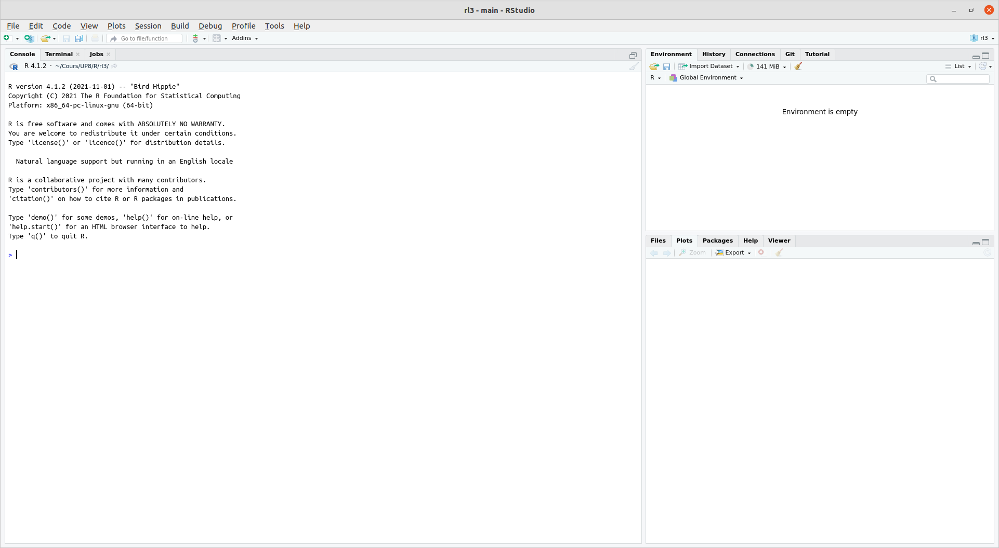
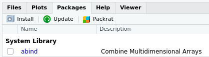

Premiers pas avec R
Introduction à R
La console
Au premier lancement de RStudio, l’interface est organisée en trois grandes zones.
La zone de gauche se nomme la Console. À son démarrage, RStudio a lancé une nouvelle session de R et c’est dans cette fenêtre que nous allons pouvoir interagir avec lui.
Faire la démonstration en direct.
Console
La Console affiche un texte de bienvenue suivi d’une ligne commençant par le caractère > (l’invite de commande).
Fournissons une première commande, en saisissant le texte suivant et en appuyant sur Entrée.
2+2[1] 4Le symbole > réapparaît, et nous pouvons lancer d’autres opérations :
5-7[1] -24*12[1] 48-10/3[1] -3.3333335^2[1] 25Addition, Sousraction, Multiplication et Division
| Math | code R |
Résultat |
|---|---|---|
| \(3 + 2\) | 3 + 2 |
5 |
| \(3 - 2\) | 3 - 2 |
1 |
| \(3 \times 2\) | 3 * 2 |
6 |
| \(3 \div 2\) | 3 / 2 |
1.5 |
Exposants
| Math | code R |
Résultat |
|---|---|---|
| \(3^2\) | 3 ^ 2 |
9 |
| \(2^{(-3)}\) | 2 ^ (-3) |
0.125 |
| \(100^{1/2}\) | 100 ^ (1 / 2) |
10 |
| \(10^2\) | 1e2 |
100 |
| \(\sqrt{100}\) | sqrt(100) |
10 |
Constantes mathématiques
| Math | code R |
Résultat |
|---|---|---|
| \(\pi\) | pi |
3.141593 |
| \(e\) | exp(1) |
2.718282 |
Logarithmes
Il n’y a pas de ln() dans R, mais on utilise log() pour désigner le logarithme naturel.
log10() désigne le logarithme en base 10.
log(x, base) désigne le logarithme en base quelconque.
| Math | code R |
Résultat |
|---|---|---|
| \(\ln(e)\) | log(exp(1)) |
1 |
| \(\log_{10}(1000)\) | log10(1000) |
3 |
| \(\log_{10}(1000)\) | log(1000, 10) |
3 |
Trigonometrie
| Math | code R |
Résultat |
|---|---|---|
| \(\sin(\pi / 2)\) | sin(pi / 2) |
1 |
| \(\cos(0)\) | cos(0) |
1 |
Espaces et codage
À de rares exceptions près, les espaces autour des commandes ne sont pas pris en compte. Les 3 commandes suivantes sont équivalentes :
10+2
10 + 2
10 + 2La pratique standard est d’utiliser la deuxième ligne, afin d’avoir un code lisible.
R bloqué
> 4 *
+Il peut arriver qu’on saisisse une commande incomplète. R remplace alors l’invite de commande > par un +. Il attend qu’on lui donne des instructions.
On peut compléter la commande et appuyer sur Entrée ou annuler tout et appuyer sur Echap pour retourner à une invite de commande normale
Objets
Objets
Nous savons utiliser R comme une calculatrice, pour une utilisation plus avancée, on peut stocker le résultat d’un calcul dans un objet à l’aide de l’opérateur d’assignation <-. Cette “flèche” stocke ce qu’il y a à sa droite dans un objet dont le nom est indiqué à sa gauche.
x <- 2Se lit “prend la valeur 2 et mets la dans un objet qui s’appelle x”.
Afficher la valeur d’un objet
x[1] 2Lors d’une opération d’assignation, R n’affiche pas le résultat de l’opération. Si on exécute une commande comportant juste le nom d’un objet, R affiche son contenu. Bien indiquer aux étudiants que l’assignation entraîne un non affichage du résultat.
Utilisation d’un objet
On peut évidemment réutiliser cet objet dans d’autres opérations : R le remplacera alors par sa valeur.
x+4[1] 6On peut créer autant d’objets qu’on le souhaite.
x <- 2
y <- 5
resultat <- x + y
resultat[1] 7Si on assigne une nouvelle valeur à un objet, la valeur précédente est perdue.
x <- 2
x <- 5
x[1] 5Assigner un objet à un autre copie juste la valeur de l’objet de droite dans celui de gauche
x <- 1
y <- 3
x <- y
x[1] 3Types
Chaîne de caractères
Les objets peuvent contenir tout un tas d’informations. Les valeurs prises peuvent être de différentes types.
Jusqu’ici on n’a stocké que des nombres, mais ils peuvent aussi contenir des chaînes de caractères (du texte), qu’on délimite avec des guillemets simples ou doubles (' ou ") :
chien <- "Chihuahua"
chien[1] "Chihuahua"Conditions logiques (booléens)
Ou des conditions logiques (TRUE ou FALSE) basées sur des comparaisons :
valeur <- TRUE
valeur[1] TRUEchien == "Doberman"[1] FALSE3<2[1] FALSEOn appelle TRUE et FALSE des booléens.
Opérateurs logiques
| Opérateur | Résumé | Exemple | Résultat |
|---|---|---|---|
x < y |
x plus petit que y |
3 < 42 |
TRUE |
x > y |
x plus grand que y |
3 > 42 |
FALSE |
x <= y |
x plus petit ou égal à y |
3 <= 42 |
TRUE |
x >= y |
x plus grand ou égal à y |
3 >= 42 |
FALSE |
x == y |
x égal à y |
3 == 42 |
FALSE |
x != y |
x non égal à y |
3 != 42 |
TRUE |
!x |
non x |
!(3 > 42) |
TRUE |
x | y |
x ou y |
(3 > 42) || TRUE1 |
TRUE |
x & y |
x et y |
(3 < 4) && ( 42 > 13)1 |
TRUE |
Vecteurs
Ou des vecteurs. Imaginons qu’on a demandé la taille en centimètres de 5 personnes et qu’on souhaite calculer leur taille moyenne. On stocke l’ensemble de nos tailles dans un seul objet, un vecteur, avec la syntaxe suivante :
tailles <- c(156, 164, 197, 147, 173)où le c() veut dire “combine les valeurs suivantes dans un vecteur”.
Si on affiche le contenu de cet objet, on voit qu’il contient bien l’ensemble des tailles saisies.
tailles[1] 156 164 197 147 173Opérations sur les vecteurs
L’avantage d’un vecteur est que lorsqu’on lui applique une opération, celle-ci s’applique à toutes les valeurs qu’il contient. Ainsi, si on veut la taille en mètres plutôt qu’en centimètres :
tailles_m <- tailles / 100
tailles_m[1] 1.56 1.64 1.97 1.47 1.73…
Cela fonctionne pour toutes les opérations de base.
tailles + 10[1] 166 174 207 157 183tailles^2[1] 24336 26896 38809 21609 29929Opérations vectorielles
Imaginons maintenant qu’on a aussi demandé aux cinq mêmes personnes leur poids en kilos. On peut créer un deuxième vecteur :
poids <- c(45, 59, 110, 44, 88)…
On peut alors effectuer des calculs utilisant nos deux vecteurs tailles et poids. On peut par exemple calculer l’indice de masse corporelle (IMC) de chacun de nos enquêtés en divisant leur poids en kilo par leur taille en mètre au carré :
imc <- poids / (tailles / 100) ^ 2
imc[1] 18.49112 21.93635 28.34394 20.36189 29.40292Autre type dans un vecteur
Un vecteur peut contenir n’importe quel type d’objet.
diplome <- c("CAP", "Bac", "Bac+2", "CAP", "Bac+3")
diplome[1] "CAP" "Bac" "Bac+2" "CAP" "Bac+3"Imaginons qu’on a demandé aux 5 mêmes personnes leur niveau de diplôme : on peut regrouper l’information dans un vecteur de chaînes de caractères. Une chaîne de caractère contient du texte libre, délimité par des guillemets simples ou doubles.
Vecteurs de nombres consécutifs
L’opérateur :, lui, permet de générer rapidement un vecteur comprenant tous les nombres entre deux valeurs, opération assez courante sous R :
x <- 1:10
x [1] 1 2 3 4 5 6 7 8 9 10Accès à un élément
Enfin, notons qu’on peut accéder à un élément particulier d’un vecteur en faisant suivre le nom du vecteur de crochets contenant le numéro de l’élément désiré.
diplome[2][1] "Bac"Cette opération, qui utilise l’opérateur [], permet donc la sélection d’éléments d’un vecteur.
Vecteurs dans la console
Dernière remarque, si on affiche dans la console un vecteur avec beaucoup d’éléments, ceux-ci seront répartis sur plusieurs lignes. Par exemple, si on a un vecteur de 50 nombres on peut obtenir quelque chose comme :
[1] 294 425 339 914 114 896 716 648 915 587 181 926 489
[14] 848 583 182 662 888 417 133 146 322 400 698 506 944
[27] 237 324 333 443 487 658 793 288 897 588 697 439 697
[40] 914 694 126 969 744 927 337 439 226 704 635R ajoute systématiquement un nombre entre crochets au début de chaque ligne : il s’agit en fait de la position du premier élément de la ligne dans le vecteur. Ainsi, le 848 de la deuxième ligne est le 14e élément du vecteur, le 914 de la dernière ligne est le 40e, etc.
Ceci explique le [1] qu’on obtient quand on affiche un simple nombre2 :
[1] 4Listes
Les éléments d’un vecteur sont forcément du même types. Si on veut mélanger le poids et le nom de différents chiens dans un même vecteur, le résultat n’est pas vraiment ce que vous attendez.
chiens <- c("Chihuahua", 5, "Doberman", 15)
chiens[1] "Chihuahua" "5" "Doberman" "15" Remarquer que R met des guillemets autour des nombres : il les a transformés en chaînes de caractères.
Pour pouvoir combiner des nombres et des chaînes de caractères, il faut utiliser des listes, à l’aide de la fonction list().
liste_chiens <- list("Chihuahua", 5, "Doberman", 15)
liste_chiens[[1]]
[1] "Chihuahua"
[[2]]
[1] 5
[[3]]
[1] "Doberman"
[[4]]
[1] 15Nous verrons les listes plus en détails plus tard. Remarquez à ce stade la présence de double crochets [[ ]], qui nous indique que nous faisons face à une liste.
Fonctions
Une fonction
Formellement, une fonction a un nom, prend en entrée entre parenthèses des arguments et retourne un résultat.
Par exemple, la fonction length permet de connaître la taille d’un vecteur.
length(tailles)[1] 5Arguments
Une fonction prend entre parenthèses un ou plusieurs arguments. Par exemple, la fonction c combine plusieurs éléments en un vecteur, et contient plusieurs arguments.
tailles <- c(156, 164, 197, 147, 173)Aide sur une fonction
On peut obtenir de l’aide sur un objet ou une fonction à l’aide de la fonction help.
help("mean")On peut aussi utiliser la version raccourcie ?mean
Scripts
Scripts
Pour l’instant, nous avons tapé les commandes les unes après les autres dans la console (de manière “interactive”). Peu pratique pour réutiliser : on utilise un fichier, appeler script.
tailles <- c(156, 164, 197, 147, 173)
poids <- c(45, 59, 110, 44, 88)
mean(tailles)
mean(poids)
imc <- poids / (tailles / 100) ^ 2
min(imc)
max(imc)Paquets
Installer et charger des extensions (packages)
Extension diffusées sur un réseau de de serveurs nommé CRAN (Comprehensive R Archive Network).
Pour installer une extension, si on dispose d’une connexion Internet, on peut utiliser le bouton Install de l’onglet Packages de RStudio.

Il suffit alors d’indiquer le nom de l’extension dans le champ Package et de cliquer sur Install.

En ligne de commande
On peut aussi installer des extensions en utilisant la fonction install.packages() directement dans la console. Par exemple, pour installer le package questionr on peut exécuter la commande :
install.packages("questionr")Installer une extension via l’une des deux méthodes précédentes va télécharger l’ensemble des fichiers nécessaires depuis l’une des machines du CRAN, puis installer tout ça sur le disque dur de votre ordinateur. Vous n’avez besoin de le faire qu’une fois, comme vous le faites pour installer un programme sur votre Mac ou PC.
Charger un paquet
Une fois l’extension installée, il faut la “charger” avant de pouvoir utiliser les fonctions qu’elle propose. Ceci se fait avec la fonction library. Par exemple, pour pouvoir utiliser les fonctions de questionr, vous devrez exécuter la commande suivante :
library(questionr)Ainsi, on regroupe en général en début de script toute une série d’appels à library qui permettent de charger tous les packages utilisés dans le script. Quelque chose comme :
library(readxl)
library(ggplot2)
library(questionr)Si vous essayez d’exécuter une fonction d’une extension et que vous obtenez le message d’erreur impossible de trouver la fonction, c’est certainement parce que vous n’avez pas exécuté la commande library correspondante.
À vous !
Swirl
Le moment est venu de mettre en pratique ce que nous avons vu.
La première chose à faire est d’installer le paquet swirl. Pour cela, copier-coller les lignes suivantes dans la console et taper Entrée.
install.packages('swirl')
library(swirl)Nous allons maintenant indiquer à swirl que nous souhaitons le voir en français
select_language('french', append_rprofile = T)Cours et leçons swirl
swirlest un paquetRqui vous permet de vous exercer de manière interactive avecR.- Vous pouvez vous procurer le cours sur Github, à cette adresse https://github.com/EliasBcd/InitiationR. Vous pouvez le faire directement dans
R, à l’aide de la commande suivante :
install_course_github("EliasBcd", "InitiationR")Lancer une leçon
Vous pouvez ensuite lancer le cours en tapant la commande suivante :
swirl()- L’invite de commande dialogue avec vous ! Elle vous demande un nom.
- Tapez-le et gardez-le même tout au long du cours.3 Appuyez sur
Entrée.
- Lisez bien ce qui apparait dans la console.
- Quand
Rvous demande choisir un cours, tapez le nombre correspondant au cours “InitiationR” et appuyez surEntrée. - Ensuite choisissez la première leçon (qui devrait être “Manipulations simples”).
- Suivez maintenant les instructions de R dans l’invite de commande.
Fin d’une leçon
À la fin d’une leçon, swirl va vous proposer de soumettre votre progression.
Tapez le numéro correspondant à “Oui”, R devrait ouvrir votre navigateur internet sur une page Moodle ou vous pouvez soumettre le fichier .txt de la leçon que vous avez faites.
Réinstaller un cours
Si pour une raison ou pour une autre il y a besoin de réinstaller le cours, tapez les commande suivante :
uninstall_course("InitiationR")Si swirl vous demande de confirmer, choisissez Oui.
install_course_github("EliasBcd", "InitiationR")Notes de bas de page
On peut en fait utiliser
|ou||et&ou&&, mais leur comportement diffère avec des vecteurs. L’opérateur doublé est conçu pour les cas où il n’y a à gauche et a droite qu’une seule valeur logique (donc pas pour les vecteurs).↩︎Et permet de constater que pour R, un nombre est un vecteur à un seul élément.↩︎
Votre numéro d’étudiant, ou votre prénom et votre nom, il faut que je puisse vous identifier par la suite.↩︎